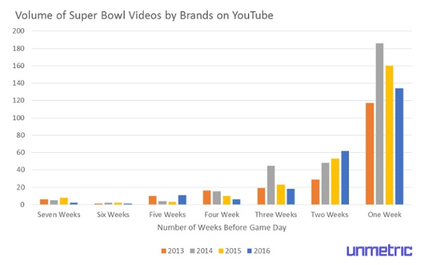
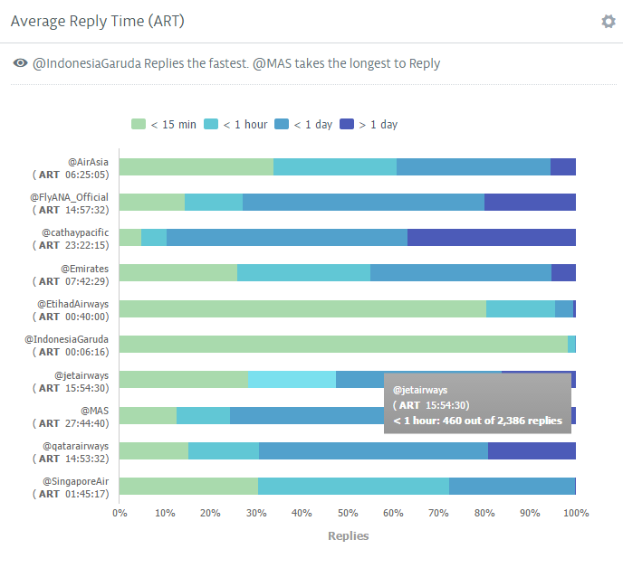
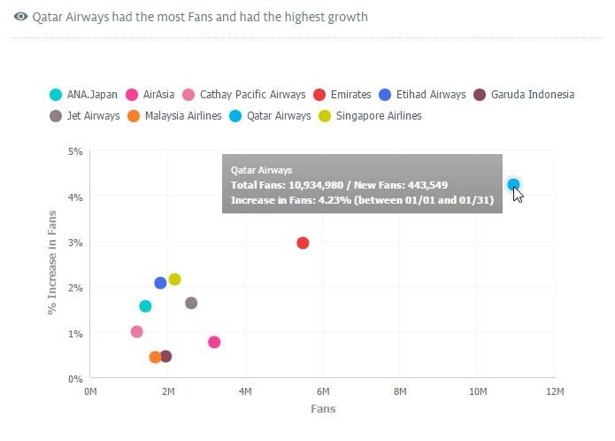
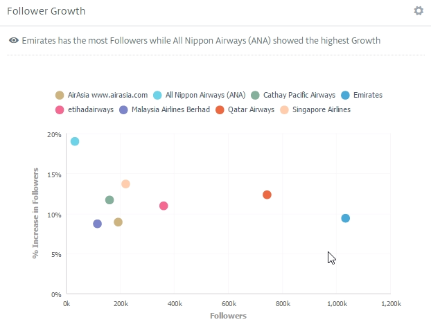

Unmetric is now integrated with Oracle Social Cloud
Mar 4, 2016
A version of this article first appeared on Social Times on February 5th, 2016. This article includes data up to February 8th so the numbers have changed slightly.

It’s clear that brands are tweaking their content publishing strategies when it comes to the Super Bowl. In 2014, brands focused on creating more content in the build up to the big day, but that strategy changed in 2015. Brands published less content in the run up to the Super Bowl but took to Twitter in the hundreds on game day to publish more Super Bowl content on one day than they had in the prior seven weeks.
Methodology
This report was put together using the content published by over 40,000 brands and captured by Unmetric. Content that included mentions of the Super Bowl or common words associated with the Super Bowl like SB49 or Big Game were used to compile the data on publishing volumes.
As non-sexy as it seems, the home appliance industry is a multi-billion dollar industry that cannot be ignored. Not only do thousands of brands compete to make it into your home, we at Unmetric tracked over 1,250 social profiles that are trying to get their content on to your newsfeed.
In this report, we looked at the performance of top home appliance brands like Cuisinart, Crockpot Slow Cooker, Nespresso and others on Facebook. We found that Electrolux was able to engage their community the best even though Samsung received the most Likes. However, Cuisinart was the one to recieve maximum love from their community since they got the highest amount of positive sentintment - 65%.
Now that we know which brands perform the best in the industry, we took a deeper dive to see what they're doing across social networks.
Samsung
In the last quarter, Samsung added 35,000 new fans, published 55 Facebook posts, ran a highly engaging #HowWeHoliday campaign and a lot more. Their consistency makes their strategy a winner. Here is a detailed report of their performance on Facebook and Twitter.
Electrolux
With an amazing response rate of 54% and innovative content, Electrolux was able to engage their fans well above the industry average. This report is a summary of their performance on Facebook and Twitter.
To get reports like this delivered to your inbox, subscribe to our blog and we'll send you a round up once a week (don’t worry, we hate spam too).
Do you follow an aviation brand on social? Whether it's to receive information about your flight, address customer support or to be notified about offers, following a brand on social media seems the easiest way to get updates.
So how are top brands in the APAC and MEA region engaging with their audience? We've analyzed the strategies of top brands in the region to find out.
We've chosen the following list of brands by first checking to see which the best airline brands are, which we found here. We then cherry picked 10 based on fanbase size, to get an idea of the varied strategies across the region. For this report, we analyzed:
- Qatar Airways
- Emirates
- Etihad Airways
- Singapore Airlines
- Cathay Pacific
- ANA All Nippon Airways
- Garuda Indonesia
- Jet Airways
- AirAsia
- Malaysia Airlines
Customer Service finds a natural home in the 140 character space, and this is true for the aviation industry as well. Airlines across the world have been forced to adapt quickly to this forum as, unlike in traditional customer service, conversations and grievances can be aired publicly and around the clock. Benchmarking a brand's Average Reply Time, or ART, against best performers can not only set goals for your team but gives an idea of what customers will expect as well.

From the image above we see that @IndonesiaGaruda replies the fastest while @MAS (Malaysia Airlines) takes the longest to reply. Garuda Indonesia also had the best reply rate - the percentage of mentions that the brand replied to, with Replies comprising 95% of their Tweets . This dedication to customer service on Twitter is already seeing returns as the brand added the highest number of new Followers last month, gaining more than 85K Followers in the last month alone!
While Twitter is the customer service hub of an airline's social media presence, Facebook is a great place to share content or information that cannot be contained in 140 characters. The clear winner among these brands in sheer fanbase alone is Qatar Airways. Typically, brands with more Fans tend to have lower Growth Rates but Qatar Airways has clearly bucked the trend - enjoying the highest growth rate in January while commanding the largest fanbase as well.

So how did Qatar Airways grow their fanbase at such a high rate, while consistently engaging well with its Fans, even receiving the highest number of Likes in January?
When we dove deeper into their content, it became obvious that the airline was actively encouraging interaction with an engagement oriented strategy. In January, Qatar Airways held a Travel Festival where Fans could enjoy discounted rates for a limited period, and this drove their considerable number of Fans to pay attention and interact.
Building this kind of loyalty on social is essential for a brand as a study found that 46% of shoppers rely on social media when making purchase decisions. Now that's a number that any brand should be capitalizing on.
Of the 10 brands analyzed, 8 have a strong Instagram presence and strategy in place. The Follower growth rate across the board only had a 10 percent difference - a strong indicator of consumer trends as well.

This steady growth in Followers also begs the question - why are users flocking to these Instagram accounts? And how are brands capitalizing on this?
The surest way to convert a Follower to a customer is by increasing brand recall and staying on top of your potential customer's mind. With Instagram's ever increasing popularity - especially with tourists and people who travel frequently, brands should be posting consistently.
Emirates is a great example of this - posting 37 pieces of content in January. By producing fresh and original content on a regular basis they were able to add a whopping 88 thousand new Followers in one month alone. Publishing a steady stream of content also ensured they were one of the best engaging brands in the region, with a higher Engagement Score than the sector average.
Instagram has a certain aesthetic that Emirates seems to understand very well. Leveraging their reputation as the largest airline in the Middle East, some of their most engaging content featured Dubai as the star.
Apart from this, they also heavily rely on branded, yet stunning imagery to bring their brand to life - a strategy also practiced by Singapore Airlines, Etihad Airlines and other top brands in the industry.
Social media was touted as the biggest disruption in marketing, and rightly so. As the learnings from the brands highlighted above, there are definite benefits to investing resources in a robust social media presence.
Posted by
Ranjani RaghupathiA writer, a dreamer and a foodie all rolled in to one, Ranjani enjoys her not-so-secret affair with marketing and social media metrics. She plays cupid with words and marries them so they can live happily ever after as beautiful sentences. You can find her at any restaurant serving great food or at a book store sneaking a peak at the latest arrivals.
Get interviews from your peers and industry experts, advice on social analytics and analyst debriefs of thought leaders delivered directly to your inbox.